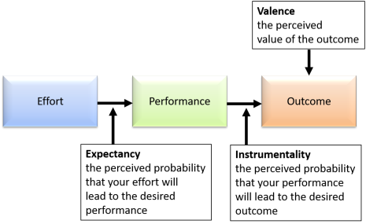

Motivation
How would you define 'motivation'? Think for a moment and then click for a definition.
 |
A definition that seems to sum it up is the willingness to expend effort |
This is not a guide to psychology. The area of motivation in
that field has been extensively researched for many years and there are
numerous theories of motivation, many of which have a direct influence
on teaching and education. Here, we will only discuss a few of the
main theories which seem most applicable to English Language Teaching.
Numerous studies have shown that not only the amount but also the type
of motivation is a key factor in language-learning success.
 |
Three types of motivation |
In this guide we are concerned with three distinct areas of motivation:
- Global motivation
- referring to the learners' overall reasons for learning English
- Institutional motivation
- referring to the learners' responses to the setting in which they are learning
- Task motivation
- referring to the learners' reactions to activities and procedures they are asked to do in the classroom (or outside it)
 |
Global motivation |
 |
Gardner and Lambert: four fundamental ideas |
For these investigators, four main types of motivation are important.
- Instrumental motivation
- refers to learning a language in order to gain another goal. For some, e.g., learning English may enhance their job prospects and open up new career opportunities.
- Integrative motivation
- refers to the motivation to learn a language stemming from a desire to integrate into an English-speaking culture. This doesn't just apply to people moving into an English-speaking society; it may apply to anyone who has an affinity with English-speaking cultures of one sort or another.
- Intrinsic motivation
- springs from within the learner. Some people actually enjoy the process of acquiring and using a new language. Gardner and Lambert concluded that this form of motivation was more powerful than ...
- Extrinsic motivation
- comes from outside the learner and may be the promise of a reward or the threat of a sanction. Gardner and Lambert concluded that the intangibility of rewards and threat made this a less powerful factor.
It's important to note here that a) these definitions may overlap and b) that individuals often have a mix of motivations and it's unwise to assign just one sort to each learner.
 |
 |
Read these statements from learners of English and think about the different reasons they have for learning English. |
|
Ingrid |
I'm learning English to get a
better job. I don't enjoy it very much but I know that I will need to be able to speak English if I want to start a new career as a journalist. Learning English is sometimes boring but I keep at it because I really want a new career. |
Audrey |
I love learning English! It's fun
to speak another language properly and I can read novels and
watch films in English, too, and that's great. I really enjoy all my lessons and work hard at learning vocabulary and grammar. The more I learn, the happier I am. |
|
Jimmy |
I'm learning English because I have
just moved to America and I want to make friends and be part
of the society. I need to work here and I have to fit in. I like learning the language because it helps me understand the culture and I can have conversations with neighbours and make friends. |
 Cary |
I'm learning English because my
commanding officer told me to. I don't really know why but I have to do what I am told because I'm in the air force. There's a lot of pressure on me so I try to work as hard as I can. |
|
|
Here are the four types of motivation explained. Can
you put the pictures to the descriptions? Click on the |
| This type of motivation describes ... | ... this learner's reason for learning |
|
Instrumental
motivation the motivation comes from wanting to learn English to do something else, in the same way that people learn to use a computer in order to send emails, make a website or write documents. |
This
is Ingrid's motivation.
She is learning English in order to do something else. Her goal is not English, it's a new job. English is just a tool she uses, like a computer or a pen. She has to learn the language if she wants to make progress in her professional life |
| Extrinsic
motivation comes from outside the learner and may be the promise of something good (more money, a better position etc.) or the threat of something bad (losing your job, being demoted etc.). |
This
is Cary's motivation. If he doesn't learn English he will be in trouble with the air force and he must obey orders. He has to learn English but may have no real idea when or if he will use it. |
| Intrinsic
motivation comes from inside the learner. Some people enjoy the process of acquiring and using a new language. |
This
is Audrey's motivation.
She may not have any use for English but she just enjoys learning a new language and having access to some of the culture of English. She does not need English but she wants it. |
| Integrative
motivation the motivation to learn a language comes from wanting to be part of a society. It may apply to people who are moving into an English-speaking society, even if they are only staying a short time. |
This
is Jimmy's motivation.
He wants to integrate into American society and he needs to be able to speak, read, write and understand English to do that. Many immigrants will have this kind of motivation. He has to learn English if he is going to be happy in America. |
|
|
This is a slightly
harder task. Can you assign these comments from learners to each (or a mix of) the four categories? When you have an answer, click for a commentary. |
- I need to learn English because my company wants me to represent them in South Africa and I'll have to live there as well as do business with people. Of course, it means a promotion for me.
- I am studying to take Cambridge First Certificate because my father has said it will help me in future. He's paying after all!
- If I don't learn better English I'm likely to lose my job in the next round of cuts.
- I enjoy learning the language and it gives me access to American culture and books in English. It'll also be useful in my career.
Learner 1 seems to have a mix of
integrative and instrumental motivation (fitting into South African
society and being promoted in his company). Clearly the pressure
to do business in South Africa is also extrinsic to this learner.
Learner 2 has a good deal of extrinsic motivation
because the pressure to succeed comes from her family. There's
also some instrumental motivation at work because she is aware that
passing an examination will be evidence of her employability.
Learner 3 has wholly instrumental and extrinsic
motivation because he needs to keep his job and the pressure is
external.
Learner 4 seems to have a mix of intrinsic motivation
(she enjoys learning the language) with elements of instrumental
motivation concerning career prospects. There is also more than a
hint of integrative motivation because she wants to access the culture
of an English-speaking society.
Try putting each learner's number on this grid. While you are there, try it for your own learners in a class you are teaching now. Click on the image when you have an answer.

 |
Acculturation theory |
Acculturation theory is associated with the work of Schumann (1986)
and is mostly concerned with non-instructional settings, those in
which the learner is acquiring rather than learning the language in
Krashen's dichotomy.
It has a good deal in common with theories of integrative motivation
which we have seen above so it does not get a major section to
itself.
It is asserted that success in learning depends on a variety of
factors:
- How much the learner wants to communicate with speakers of the target language
- The availability of opportunities to do so
- The degree to which the learner wishes to integrate with the target language community
In turn, these factors are influenced by other, mostly social, factors which include:
- the perceived status of the target language culture. The higher the perceived status, it is argued, the higher will be the motivation to integrate.
- shared cultural institutions such as schools, workplaces, clubs and so on in which the learner will gain opportunities to interact with native speakers.
- the similarity or otherwise of the cultures of the target language group and the learner. The more similar they are, the easier it will be.
- how long the learner intends or is forced to remain in the target culture nation. The longer one stays, the greater is the need and motivation to learn the language.
As you can see, most of acculturation theory concerns integrative and instrumental motivation and should be seen in that light.
 |
Abraham MaslowIf you plan on being anything less than you are capable of being, you will probably be unhappy all the days of your life |
Back in 1943, Abraham Maslow proposed his 'Hierarchy of Needs' and asserted that until needs at lower levels are satisfied, those at the next highest level can't be addressed. Levels 1 to 4 are described as 'deficit needs'. So, e.g., if you are hungry and in need of sleep, you can't focus on desires for self esteem and so on. The hierarchy can be represented like this.
 |
Self-actualisation needs are described as: Truth, individuality, realising one’s own unique capabilities, ‘being who I really am’, achieving goals related to a sense of purpose, becoming fully human, everything that a person can become. |
| Esteem needs are: Self respect, reputation, status, feelings of strength, independence, adequacy and importance to others. | |
| Belonging and love needs are: Family, friendship, a place in a group, a sense of identity, social approval. | |
| Safety needs are: Stability, order, shelter, freedom from fear, freedom from chaos and freedom from pain. | |
| Physiological needs include: Air, water, food, sleep, shelter, procreation. | |
This has obvious classroom implications. If learners are feeling threatened (a safety need) and excluded (a belonging and love need) then they are unlikely to be able to focus on realizing their own potential.
 |
Expectancy Theory |
A different understanding of motivation has been put forward by
Victor Vroom. Vroom's work was focused primarily on a workplace
environment and concerned with how people are best managed in order to
get the most positive outcomes. Whether it is relevant to
language-learning settings is in some dispute but many believe it offers
a simple and satisfying explanation for how people reach decisions and
what will encourage them to work better.
Essentially, Vroom identifies a relationship
between:
- Valence: the value attached to an outcome. In our case,
How much do you value learning English? - Expectancy: the individual's ability to achieve the goals set.
In our case,
Do you believe you can successfully learn English this way? - Instrumentality: the likelihood that the effort will be rewarded
with a successful outcome. In our case,
Do you believe the learning you are doing will help you to use English successfully?
The theory can be represented like this:

These are, according to the theory, measurable.
- Valence can be measured on a scale of -1 (highly undesirable) to +1 (highly desirable).
- Expectancy can be measured on a scale of 0 (the effort will NOT lead to the performance) to 1 (the effort will certainly lead to the performance).
- Instrumentality can be measured on a scale of –1 (the performance will certainly not lead to the outcomes) to +1 (the performance will certainly lead to the outcomes).
Behaviour is then determined by the subjective evaluation of the
strength of the correlation between: EFFORT, PERFORMANCE and OUTCOME.
Motivational Force = Expectancy x Instrumentality x Valence
Influencing global motivation |
It is often averred that neither the teacher nor the institution can
influence global motivation to any great degree. After all, the
idea of global motivation is the motivation that the learners bring from
outside.
That's not always the case.
- People's motivation can be made more intrinsic by realising that they are both capable of learning English and that the process can be entertaining and satisfying
- Someone with initially no integrative motivation at all can become intrigued by elements of the target-language culture and thus gain some desire to access it
- Extrinsic motivation can be enhanced by programmes which focus on rewards for success
- Instrumental motivation can be increased if the learners' programme of study is clearly linked to real-life (for them) tasks and skills-getting activities
Institutional motivation |
This is the name often given to the fact that learners can also be motivated by their surroundings.
Teachers often conclude that there really is nothing they can do about how their learners feel about where they are studying and the facilities which are available to them. Of course, if you are an academic or school manager, there most certainly are things that you can do.
Boring, dark or uncomfortable classrooms do not help people to learn. There are a number of things we can all do to increase institutional motivation. For example:- Make the classroom bright and welcoming.
- If the walls are bare and dun-coloured, disguise them with posters, pictures and examples of the learners' work (having that put on the wall is often a motivating factor in itself).
- Don't ask people to work in the gloom. If you have lights, use them.
- Make sure that the seating arrangements suit the
type of lesson. For more on this, see
the guide to classroom organisation
(new tab). Are the
sight lines right? Can everyone see what they need
to see? Can everyone hear clearly? and so on.
It is very frustrating and demotivating to be asked to do things in an environment that hinders you.
- maintain a positive attitude yourself and don't complain
about your school in front of your learners (complain to the
boss, instead!)
- Which would motivate you?
The photocopier isn't working too well so I'm sorry about the streaks. We are working on it and it will be OK tomorrow.
or
The photocopier isn't working too well and they haven't done anything about it yet so I'm sorry about the streaks. What can we do? - If you are an academic or school manager, what sources of complaint have the teachers got? Do they transmit these to the learners or are there other, more positive, ways of bringing it to your attention?
- Which would motivate you?
- make handouts and materials colourful and attractive
- It is not very motivating to be handed a hand-written text which you can barely read. It is motivating and reassuring to receive well-written, attractive handouts which can form the basis of a record of what you have learned. This also increases task motivation (see below).
- If you are a teacher, make sure that what you give people is attractive, accurate and fit for purpose.
- If you are a school manager or academic manager, establish an in-house style which ensures that what people receive in class and work on at home looks professional and well prepared.
- Remember Maslow's third level in the Hierarchy of Needs
and make sure
- that your learners know about each other's lives
- that the learners respect (or at least tolerate) each other's opinions and feelings
- that all participants feel part of a group not part of a group of individuals
There is, in fact, a good deal that teachers can do to influence institutional motivation, isn't there?
Task motivation |
This is the area over which the teacher has the most control, of course.
- Making tasks and exercises enjoyable and challenging can
increase people's motivation to do them. The theory is
that the more they
commit to the task, the better they will learn.
- reading a letter from someone you don't know addressed to someone you don't know is not very interesting but reading a letter from your teacher addressed to you is immediately more interesting for you because it is personal
- using tasks which are either too easy or too difficult demotivates. The first because it leads to boredom, the second because it leads to anxiety and frustration
- Personalising tasks of all kinds can help people to get engaged
and learn more: personalisation → engagement
- writing a description of a person in a picture practises some language skills but writing a description of a classmate, a friend or member of your own family practises the same skill in a more personal and interesting way
- using the target language or skill in a role play in which you pretend to someone you are not can be reassuring and safe but being yourself in that situation can be involving and memorable
- Responding to learners' contributions is a key teaching skill.
- Which do you want to hear?
No, that's wrong. The right answer is ...
Well, that's not quite right. Let's see if we can improve it.
Yes. Good. Next?
Yes that's right! What an interesting idea!
It is not difficult to choose, is it? - Which do you want to see?
I have underlined all your mistakes in red and put by them. 4/10 overall.
I have put a by all the good things you write but there are some quite
important mistakes and
we'll go through them in class tomorrow. Well done!
by all the good things you write but there are some quite
important mistakes and
we'll go through them in class tomorrow. Well done!
Again, it's not difficult to choose. - Don't ask impossible questions such as "Do you think hunting
is right? Why?" With no time for preparation and no
warning or context, all of us would struggle to answer questions
like that.
See the guide to asking questions (new tab) for more.
- Which do you want to hear?
- Setting the level of cognitive challenge. This is not the
same as selecting materials which are at the right level for the
learners. It involves knowing what is being required of them
in terms of thinking skills. Set this level too low and a task
becomes dull and predictable, set it too high and the learners may
be frustrated and fail to make connections between new data and data
they already control. Either will reduce the level of task motivation.
There is a guide, linked below, to an influential approach to
cognitive challenge initiated by Bloom and others in the middle of
the 20th century. Very briefly,
- Level 1: remembering
This involves simply the ability to recall a fact. - Level 2: understanding
This involves some deeper thought to get to grips with a fact. - Level 3: applying
This involves using knowledge and understanding to make a decision about action. - Level 4: analysing
This requires the application of levels 1 to 3 and then going on to breaking things down into constituents to understand fully what is happening. - Level 5: evaluating
This involves using all the processes in levels 1 to 4 and judging how well, for example, one's use of language measures up to the models with which one has been presented. - Level 6: creating
This is the most demanding level of all because it requires the use of the previous 5 levels in order to synthesise data into a new and original work.
For a more detailed consideration of Bloom's taxonomy and its various revisions, see the guide, linked below.
- Level 1: remembering
- It is especially important for younger learners that task
motivation is kept high because young learners often do not
respond to very long-term goals.
- Telling a young learner that English will help them get a better job in 5 years' time is not very motivating for them so they need to be challenged by and enjoy what they are doing right now.
- Focusing on topics beyond the learners' experiences is often a demotivating and off-putting exercise. Topics in coursebooks try to avoid this kind of thing, of course, which is why they are so bland and uninteresting
- Choosing topics about which you know your learners have views, is, however, a motivating and intriguing experience. Don't shy away from the controversial or important.
Summary
Here's a summary but, although the various parts are in separate boxes, that does not mean that they are not operating together.

You have shown a good deal of motivational force getting this far but there is, of course, a short test.
| Related guides | |
| humanism in ELT | for more on how motivation may be enhanced by considering the whole learner |
| Krashen and the Natural Approach | for more on affective influences on the motivation to learn |
| unlocking learning | this is a guide in the Delta section which considers motivation and three other theories |
| Blooms' taxonomy | for more help in recognising and applying challenge in terms of cognitive load |
| alternative methodologies | for more on some techniques which may raise motivation through innovation |
References:
Gardner, RC, & Lambert, WE, 1972, Attitudes and motivation in
second language learning, Rowley, MA: Newbury House
Schumann, J, 1986, Research on the acculturation model for L2
acquisition, Journal of Multilingual and Multicultural Development,
Vol 7/5
Vroom, VH, 1964, Work and Motivation, New York: McGraw Hill